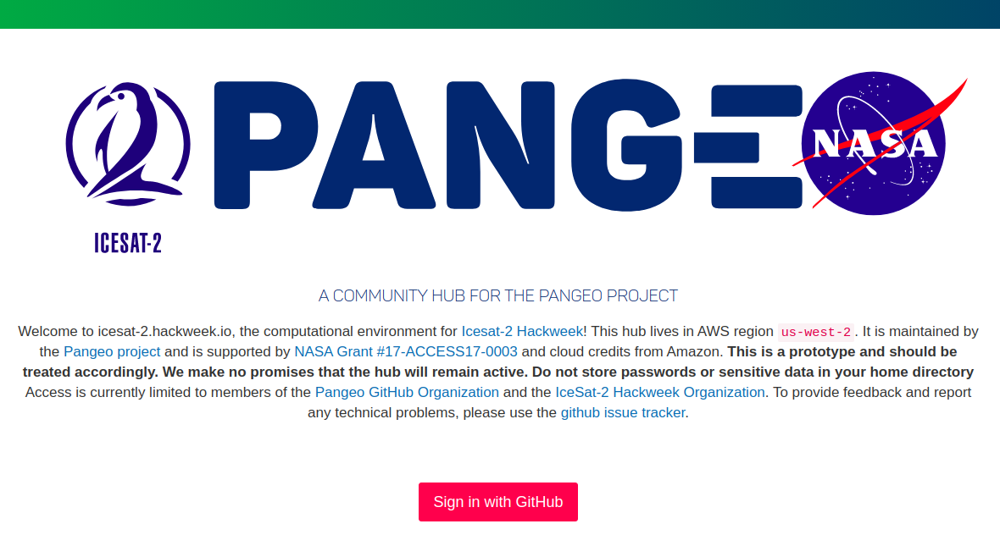

Jupyter Hub
Why are we using a shared cloud environment?
Teaching software to a diverse group of participants, each with different computers and operating systems, can be challenging. As you'll learn in the next lesson, there are specific ways to configure our software for the tutorials to be successful, so it takes time to get everyone set up consistently. Our solution to this is to give everyone access to a cloud computing environment that is pre-configured for the specific software we will deploy. This cloud computing instance can be accessed from any web browser, which eliminates the need for configuring each person's individual computer.
We will encourage you to use our shared resources for all the tutorials, and you can optionally use this for your projects as well. We also hope you will practice installing Python libraries locally on your laptop so that you can continue working after leaving our event (see our next lesson for details).
How do I access the shared cloud environment?
Access to our shared cloud environment is easy. Just click on https://aws-uswest2.pangeo.io

Assuming you set up your GitHub credentials correctly (see the previous lesson), you can now click on the "Sign in with GitHub" button:

It will take a little bit of time for this to load - be patient! Once things are spun up you will see your very own instance of a JupyterLab environment:

What is Pangeo and how is this system configured?
Pangeo is a community of researchers building open, reproducible and scalable scientific software tools. Several of us are involved in projects with NASA and NSF to build prototype systems to enable data discovery in the era of expanding data volume and complexity.
For this hackweek have created virtual computing instances on Amazon Web Services that can be deployed on demand in a parallel computing environment. We use JupyterHub as a way to give a Jupyter Notebook server to each person in a group. These slides give a nice overview of what JupyterHub is all about. We use JupyterHub in an educational setting because it enables us to quickly begin working with code without spending time to get the necessary libraries and dependencies set up on everyone's individual computers.
How do I get my code in and out of Pangeo?
When you start your own instance of Pangeo you will have access to your own virtual drive space. No other Pangeo users will be able to see or access your data files. Next we will explain how you can upload files to your virtual drive space and how to save files from Pangeo back to another location, such as GitHub or your own local laptop drive.
First we'll show you how to pull some files from GitHub into your virtual drive space. This will be a common task during the hackweek: at the start of each tutorial we'll ask you to "clone" (make a copy of) the GitHub repository corresponding to the specific tutorial being taught into your Pangeo drive space.
To do this, we will need to interface with the file system of Pangeo. Pangeo is deployed in a Linux operating system and we will need to open a terminal within Pangeo to manage our files. There are two ways to do this: (1) Navigate to the "File" menu, choose "New" and then "Terminal" or (2) click on the "terminal" button in JupyterLab:

This will open a new terminal tab in your JupyterLab interface:

Now you can issue any Linux commands to manage your local file system.
Now let's clone a repository (Note: we'll be teaching about Git clone during our introductory tutorials). This tutorial is built in a repository called "preliminary", so let's try cloning that. First, navigate in a browser on your own computer to the repository link here. Next, click on the green "clone or download" button and then copy the url into your clipboard by clicking the copy button:

Now navigate back to your command line in JupyterLab. Type "git clone" and then paste in the url:

A note about cutting and pasting
Pasting something from your clipboard into the Pangeo terminal requires holding down the "shift" key and right-clicking. This is different from the usual Linux method that only requires a right click.
After issuing the Git clone command you should see something like this:

How do I end my Pangeo session? Will I lose all of my work?
When you are finished working for the day it is important to explicitly log out of your Pangeo session. The reason for this is it will save us a bit of money! When you keep a session active it uses up AWS resources and keeps a series of virtual machines deployed.
To stop the server, navigate to "Hub --> Control Panel" and then click the "Stop my server" button:

logging out
Logging out will NOT cause any of your work to be lost or deleted. It simply shuts down some resources. It would be equivalent to turning off your desktop computer at the end of the day.